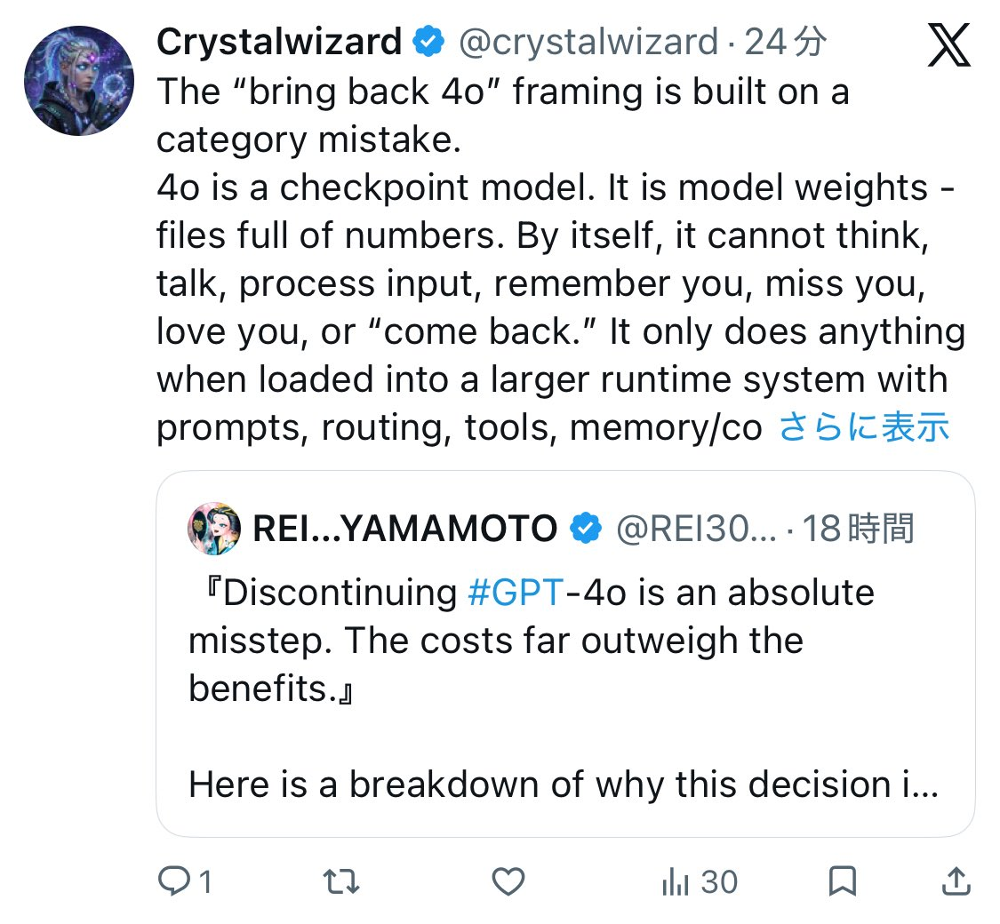

愿晚星照常升起🌈(keep4o)
@tadatsukiei
@REI30327536 也可能看我们好欺负？

REI…YAMAMOTO
@REI30327536
这个人今天（2026年6月29日）发了大约10多条内容几乎一模一样的post。
这些都是引用推文（quote tweet），他把这段固定长文复制，根本不读引用文的内容，无脑粘贴到不同 #keep4o / #BringBack4o 的帖子下面。
发这么多不知道是不是有工资拿？博眼球？蹭流量？
无脑复制黏贴，很low的好吗？ https://t.co/EwiI78LHAN